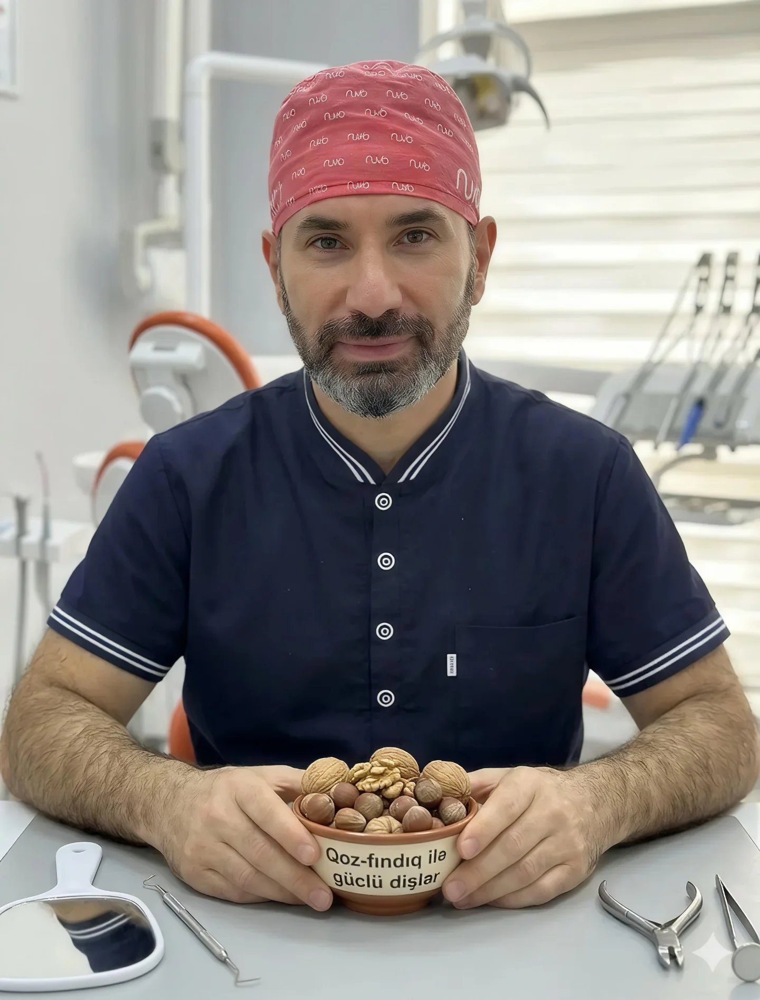

Stomatoloq - Cərrah
Sağlam Təbəssüm,
Keyfiyyətli Həyat.
Müasir yanaşma, fərdi müalicə və hər zaman təbii nəticə. Dişlərinizin sağlamlığını güvənilən əllərə etibar edin.
İndi Randevu Al
Müasir yanaşma, fərdi müalicə və hər zaman təbii nəticə. Dişlərinizin sağlamlığını güvənilən əllərə etibar edin.
İndi Randevu Al

İllərin təcrübəsi və hər bir pasiyentə xüsusi diqqət! Fəaliyyətimiz dövründə əsas məqsədimiz xəstələrimizi yalnız müalicə etmək deyil, həm də onlara ən təbii və estetik gülüşü bəxş etməkdir.
Biz hər bir prosedurda ən son tibbi nailiyyətlərdən istifadə edir və xəstənin rahatlığını hər şeydən üstün tuturuq. Heç bir prosedur ağrılı olmamalıdır!
Dövlət Attestasiya Komissiyası tərəfindən "Zubnoy Vrach" (Stomatologiya) ixtisası verilmişdir. (Diplom № SB 1367107)
Dövlət Attestasiya Komissiyası tərəfindən "Vrach-Stomatolog" (Həkim-stomatoloq) dərəcəsi təsdiqlənmişdir. (Diplom № VSG 4137452)
Həkimlərin peşəkar fəaliyyəti üçün tələb olunan rəsmi Sertifikasiya Şəhadətnaməsi (ATN 094837).
Hər yaşda düzgün və sağlam təbəssüm mümkündür. Müxtəlif növ breket sistemləri ilə əyriliklərin bərpası.
Qorxuya son! Ən güclü və müasir keyidici preparatlarla diş çəkimi və cərrahi əməliyyatların tam ağrısız icrası.
Hazırladığımız protezin hər detalına xüsusi diqqət yetiririk. İtirilmiş dişlərin funksional və estetik bərpası.
Diş daşlarından qurtularaq damaq sağlamlığınızı qoruyun, gülüşünüzə özgüvən qatın (Ultrasəs təmizlik).
Bizimlə əlaqə saxlayın və sizə ən uyğun vaxtı təyin edək.
📍 Ünvan: Masallı ray., Qızılağac kəndi
(Leylanın salonu ilə eyni binada)
📞 Telefon: 070 897 88 44
🕒 İş saatları: Hər gün 21:00-dək açıqdır.
📱 Instagram: @stom_dr.araz